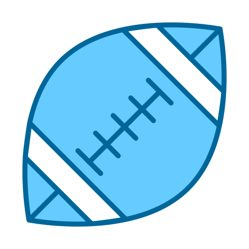

À propos de moi

Chadrack Nsimba Bitombo
Étudiant en BUT 2 Métiers du Multimédia et de l'internet(MMI) spécialité Création Numérique
Passionné par le design digital et la création visuelle, je cherche à mettre ma créativité et mes compétences techniques au service de projets innovants en graphisme, motion design ou en audiovisuel.
Formation
-
2025 - Présent
BUT Métiers du Multimédia et de l'Internet (MMI)
IUT de Sénart Fontainebleau
-
2021 - 2024
Baccalauréat Téchnologique
Lycée Gaspard Monge
Mes Compétences
Cliquez sur une compétence pour voir des exemples de mon travail dans le portfolio

Centres d'intérêt
Basketball

Football Américain
Voyage